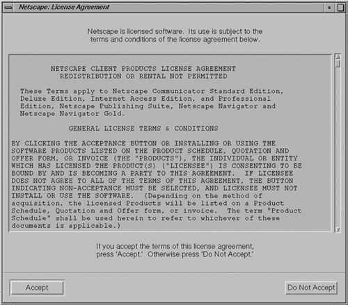
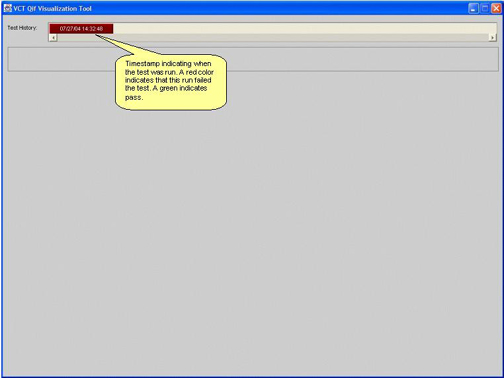
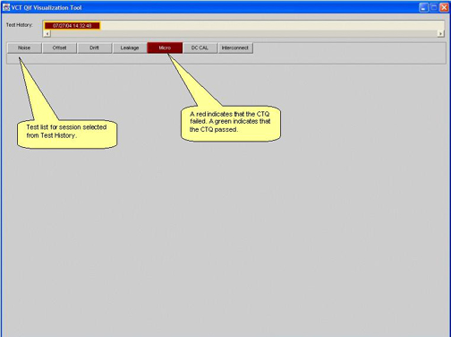
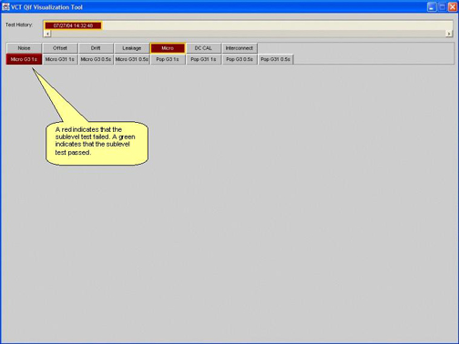
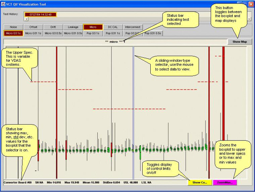
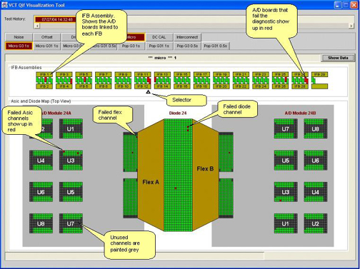
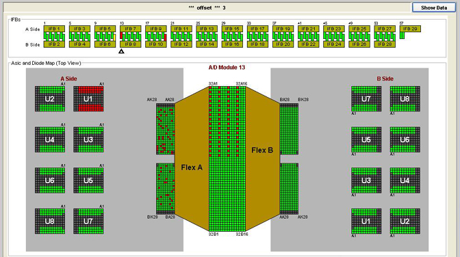

Proprietary to General Electric
Direction 5193575-800, Rev# 5
LightSpeed 7.X Service Information - Adv
Proprietary to General Electric |
The QIF Visualization tool allows the user to analyze DASTOOLS test sequences in a graphical format. This tool does not have the capability to analyze patient or raw data. The tool is HTML based and launches in a standalone browser window. Functionally, the tool parses the results of the individual DASTOOL tests, creates many smaller history files, and displays the results in a graphical format for the user.
When troubleshooting Image Artifacts, the scan data must be analyzed using Scan Analysis. This is the only way to conclusively identify the “potential faulty hardware”. The QIF Visualization tool can help to verify faulty hardware. It should NOT be used as a standalone tool for Image Artifact troubleshooting.
Three colors are used to represent the quality of the data relative to specification.
| COLOR | MEANING |
| Red | Outside of test specification limits. |
| Yellow | 50% of specification limit versus mean. (Spec = +/- 1.0, Mean = 0.0, Yellow = +/- 0.5) |
| Green | Less than 50% of specification limit versus mean as defined for yellow. |
The tool also operates as follows:
All box plot data is normalized to specification limits, (+/- 1.0) plus or minus one maximum.
Boxplot data points are presented at the Digital Interface Board (DIFB) level.
All default or no data elements are green.
This means that the architecture maps will show a “Green” status even if the element is not used in that specific test.
Occasionally the browser window will hang before the tool can fully initialize. This is a known issue within Netscape.
Work-around: Simply click on the QIF Visualization button in DASTOOLS again. The software will kill the hung process and restart the QIF Browser.
For service, this tool presents a unique opportunity to baseline your systems. The QIF Visualization tool allows the user to quickly review the performance of the DAS/Detector subsystem, provided the FE has performed and analyzed DASTOOLS with a properly working, Customer Satisfied and Accepted, system. Periodic execution and analysis of DASTOOLS can be proactive.
If the following Error or licence screens show up during QIF startup, select OK and proceed.
Illustration 1: Error Screen

Illustration 2: License Screen

Illustration 3: Top Level Screen

Once the QIF tool launches successfully the screen in Illustration 3 will be displayed. The basic functional features of this screen are as follows:
Test History. This frame of the window will contain the full history retained on the system. The user simply needs to select one of the time-date stamped history files to view the DASTOOLS tests performed.
Illustration 4: DASTOOLS Auto Test CTQ Screen

Illustration 4 displays a listing of the tests performed in the selected DASTOOLS session.
Test History is identified with a time/date stamp for each test grouping selected by the user.
Each history will be presented in either RED (failed) or GREEN (passed).
Green have “passed” by definition, but may contain marginal (yellow) results.
Below the test list is the CTQ (or subtest) list as shown in Illustration 5. Its behavior is as follows:
All valid tests with results exceeding specification limits will be presented in RED.
All other valid tests will present in a “green” status. These tests have “passed” by definition, but may contain marginal (yellow) results.
Any tests that are not valid appear gray.
Illustration 5: CTQ (subtest) list example

Illustration 6: Microphonics Box plot Screen

Illustration 6 shows an example Microphonics test data display. It also shows the various controls and features of the QIF data display.
Each of the Converter (A/D board) data channels are normalized to specification limits, +/- 1.0 maximum.
| NOTE: | References to converter boards are talking about the A/D boards that are a part of the Field Replaceable Detector Module. |
No lower spec limit is shown when zero is the low limit, as in this case.
The normalization effectively auto scales the board to board relationships.
At this point the user can select any of three buttons:
Grey, <SHOW MAP>
Changes data window to display Architecture Maps.
Yellow, <SHOW/HIDE CONT...>
Toggle function of the data window yellow control indicators, 50 percent data value.
Default condition is Hide.
Purple, <ZOOM MAX/...>
Toggle function of one step zoom or normal.
Default is Normal
Note the blue dual vertical line cursor in the center of the display in Illustration 6. It is positioned over a specific data point in the graph. The following information is displayed in the text frame below the data plot frame for the selected data point.
Converter board number (A/D board)
Converter board serial number (A/D board)
Min value
Max value
Mean value
Standard deviation value
When the user hovers the cursor over a specific Converter box plot element, a data window appears. This window provides detailed information on the selected data point. This window will disappear after a short period of time.
Illustration 7 shows the display when the [Show Map] button is selected for a red data point in the boxplot display. Note that the [SHOW MAP] button is now [SHOW DATA] . Selecting this button will return the user to the box plot data screen.
Illustration 7: Map display

Use the triangle arrow selector in the IFB Assemblies box to select the A/D board for viewing. Illustration 7 shows IFB #12, A/D board 24 selected. The ASIC and diode map display box on the bottom are all part of a single FRU, in this example FRDM #24.
The Architecture Map presents the DAS/Detector layout as seen with the DAS at the 12 o’clock position viewed from the front side of the gantry.
Box plot data is a simple representation of data distribution. The standard definition is a quartile distribution, meaning the data is represented in four parts. The length of each quartile is determined solely by the data distribution. Note, each quartile can be of different length. Why? Because 0% to 25% is the first group of data collected. 25% to 50% is the second group of data collected. 50% to 75% is the third group of data collected. And 75% to 100% is the last group of data collected.
Using this representation in QIF Visualization, two additional elements must be considered. Limit specifications and converter card box plot relationships.
The data graph shows the individual converter card response as compared to the limit specifications. In other words, how close to the limits and how tightly grouped is the data.
The data graph also shows the board to board relationship. In other words does a converter card have similar response as compared to it’s neighbors?
As seen in the previous pages, it is desirable to have a tightly group distribution that has very similar response from board to board. This means a linear response across the Detector with a small standard deviation.
The true test of failure is if Image Quality is affected. Do not replace parts to make the plots look good.
Bad channel mapping is a hardware fault recovery process that is new with the VCT family of scanners. The QIF tool does not currently have any built in functionality to define which pixel or ASIC failures are already known to the system and currently being ignored by image reconstruction. Do NOT replace a module for detector pixel failures or ASIC failures seen in QIF unless the system error log has identified those failures as potentials for causing image quality issues or DASTools maratios test is not correcting a ring artifact that you have also identified with QIF.
An ASIC failure will show up as shown in Illustration 8. Note the pattern shown on the A-side of the detector module. This pattern is identical for all ASIC's just shifted in position depending on which ASIC failed. Also remember that an ASIC failure in some locations in the detector can be completely mapped out by the bad channel mapping software with no service corrective action required. An ASIC that can not be mapped out will be identified by the bad channel mapping routine and noted in the gesys log. In this example FRDM #13 has a failed ASIC.
Illustration 8: ASIC failure
